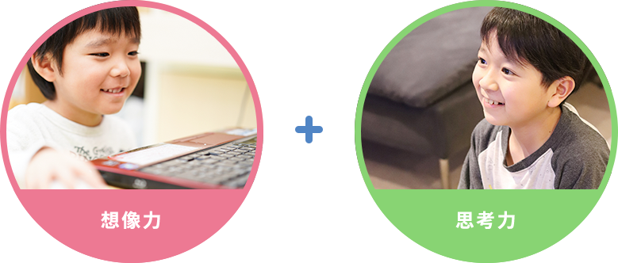

イオングループの株式会社イオンファンタジーと提携し、ゲームガレッジLv.99によるゲーム学習を、放課後等デイサービス 『マイスクール』で提供していきます。東京大学の藤本徹先生、世界トップ10ティーチャーの正頭英和先生を中心とするクロスエデュケーションラボが監修のもと、「あそび」が持つ「まなび」の効果を最大限に活かしていきます。ゲームプレイだからこそ伸ばせる創造力や思考力がそこにはあり、子どもたちの自発的な気持ちを大事にしながら成長できるプログラムを実践しています。また、ソーシャルスキルトレーニング（SST）や感覚統合療法などのカリキュラムも取り入れ、お子さま1人ひとりにあった支援、幅広い支援が可能となっております。障がいに対して認識・考え方が変化していく時代です。閉ざされた支援ではなく、オープンサポートを常に考えております。


自分らしく（My Self） 笑顔（My Smile） 自分の望む人生（My Story）
という理念を掲げ、学べる場所（school）を提供します。
ゲームカレッジLv.99レベルだから伸ばせる、
想像力や思考力がある
ゲームカレッジLv.99 ゲーム学習カリキュラム

ゲームカレッジLv.99
ゲーム学習カリキュラム
- ポケモンユナイトコース
- ゲームクリエイターコース
- マインクラフト-サバイバルコース
- マインクラフト-クリエイティブコース
-

チームに分かれて制限時間内にどれだけ多くのスコアを獲得したか競うゲーム。シンプルなルールでの10分間の試合をトレーナーと一緒にプレイすることで、振り返りを活発に行い、チームでの戦略を試行錯誤しながらプレイすることができます。
-

プログラミングアプリ「スプリンギン」を通じて「ゲーム」「絵本」「漫画」など子ども達が好きな作品を作ります。「創る→喜ばれる→嬉しい・楽しい」というサイクルをつくることで、プログラミングを使いこなす能力を自発的なかたちで育みます。
-

冒険を楽しむRPGコースで問題解決力や総合的な能力を高めます。
-

建築物やアートを制作し想像力や表現力を高めます。

ＳＳＴカリキュラム
(ソーシャルスキルトレーニング)
社会性を身につけるために必要なカリキュラム。
生活の流れに取り入れながら学習します。

ソーシャルスキルトレーニング（SST）とは、人が社会で生きていくうえで必要な技術を習得するための訓練のことです。
人は生まれてからたくさんの人と出会います。その関わりの中で無意識的に、「してはいけないこと」、「した方がいいこと」などの暗黙のルールを身につけていくのです。ところが発達障害のある場合などは、それらをスムーズに身につけられないケースがあります。
たとえば、「ゲームのルールが守れない」というのも一つの例でしょう。「周りの人がこうしているから自分もこうしよう」と自然に判断できたり、「ルールは守らなければいけない」と注意をされてすぐに改善できるようであれば、SSTは必要ありません。その集団内での行動の善し悪しを周りの様子から推察したり判断することが苦手で、注意をされてもなお同じことを繰り返してしまう場合においてSSTは有効な改善手段となりうるのです。
SSTでは、ゲームのルールが守れるようになるという目標に対して
「ゲームは負けることもあるということを知る」
「負けても楽しいという感覚を身につける」
「悔しくても自分の感情をコントロールする」
といった小さなステップを作ります。
その一つひとつの過程を丁寧に踏み、ゆっくりと社会性を身につけさせていくのがSSTなのです。

その他
季節のイベントや社会見学など、
日常にわくわくドキドキを＋αした内容をご用意。

自立
- 挨拶・整理整頓・掃除・身だしなみ等の身辺自立の育成。
- 気持ちの切り替えや感情コントロールする方法を身に付ける力の育成。
- 時間の概念・金銭管理といったスキルの習得。
- 生活場面での適切な言動（相手の気持ちを考える）や行動できる能力の育成。
- 性教育を通じて人との適切な関り方の学習。
主なカリキュラム
- 各種イベント
- お買い物体験、お仕事体験
- 電車やバスに乗って目的地に出かけよう

社会性、協調性
- 目的を達成するために過程も踏まえた学習。
- 仲間たちとの規律と協力、ともに活動する楽しさの学び。
- 人との関り方や関係性をよりよくする習慣つくり。
- 自己表現力、表現方法の育成。。
- 規律やルールを守ることの意味と大切さ。
- 愛情支援
主なカリキュラム
- クッキング（材料には何が必要？買い物の段取り、料理手順をみんなで考えよう)
- 農業体験（クッキングで使用する野菜を育ててみよう）
- 電車やバスに乗って目的地に出かけよう
- 地域活動（地域行事への参加など）
- ルールを守ってチーム大会
- 交通ルールや公共マナーを身に付けよう

運動（感覚統合療法）
人はさまざまな感覚情報を同時に感じ取り、脳内で処理し、活動することで、新しい行動を次々と獲得していきます。しかし、感覚情報のやり取りに何か困難があると、「動作がうまくできない」「新しい行動が獲得できない」という現象がおきます。この感覚のつまずきにアプローチして発達を促すことで、より高度な動作の改善につなげていき、その子自身が、自分の力を理解し、自立した力を獲得できるよう支援していきます。
- バランス練習
- 力加減練習
- 手の巧緻性（はさみなどを使った道具操作の練習）
- 集中力の向上。
平日の場合
13:00
お迎え
それぞれの学校にお迎えにいきます。 直接来ていただいてもOK。
14:00

順次登園→宿題
登園後、まずは宿題から取り組んでいきます。
15:00
おやつタイム
おやつタイムも「訓練」の一つ。季節に合わせた行事もおやつタイムに取り込んでいます。
16:00
カリキュラム
1人ひとりにあった個別・集団カリキュラムで、お子様の「個性」を成長させていきます。
17:00
順次降園
到着時にスタッフがご家族へお子様のご様子の報告をいたします。ご家族との情報交換も。
土曜日の場合
13:00
お迎え
それぞれの学校にお迎えにいきます。 直接来ていただいてもOK。
14:00
順次登園→宿題
登園後、まずは宿題から取り組んでいきます。
15:00
おやつタイム
おやつタイムも「訓練」の一つ。季節に合わせた行事もおやつタイムに取り込んでいます。
16:00
カリキュラム
1人ひとりにあった個別・集団カリキュラムで、お子様の「個性」を成長させていきます。
17:00
順次降園
到着時にスタッフがご家族へお子様のご様子の報告をいたします。ご家族との情報交換も。
株式会社MYTH
072-471-9900
 友達追加ですぐできる！
友達追加ですぐできる！相談・見学体験予約もコチラ